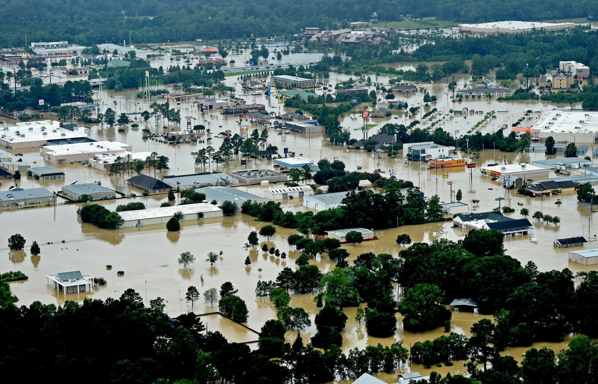

Learn about floods, their causes, impacts, and how to protect yourself and your community.
What Are Floods?
Flooding occurs when water exceeds normal levels, submerging land that is typically dry. This can be caused by a variety of factors, including heavy rainfall, storms, and human activities. Floods can range from localized flash floods to large-scale river flooding and coastal inundation.
Types of Floods
River Flooding: Occurs when rivers overflow due to heavy rain or snowmelt.
Coastal Flooding: Triggered by storm surges, hurricanes, and high tides.
Flash Flooding: Sudden, intense flooding caused by heavy rainfall over a short period.
Urban Flooding: Caused by poor drainage in cities, leading to water accumulation.

Causes of Floods
Flooding can result from both natural and human-induced factors. These factors include weather patterns, geographical conditions, and changes in land use.
Natural Causes
Heavy Rainfall: Excessive rainfall in a short period of time can quickly overwhelm rivers and drainage systems.
Snowmelt: In spring, the melting of accumulated snow can lead to high runoff, flooding nearby rivers.
Storm Surges: Strong winds from hurricanes and tropical storms can push seawater onto coastal land.
Effects of Floods
The impact of floods can be catastrophic. Here are some of the common effects of flooding on communities, economies, and the environment:
Property Damage: Floodwaters can damage homes, businesses, and infrastructure, leading to costly repairs.
Health Risks: Floodwaters can carry dangerous pathogens, increasing the risk of diseases like cholera, malaria, and typhoid.
Displacement: Floods force people to evacuate, causing temporary or long-term homelessness.
Environmental Damage: Floods can lead to soil erosion, loss of wildlife habitats, and water pollution.
Economic Losses: Agriculture, business, and tourism can all suffer, with losses amounting to billions of dollars annually.
Flood Preparedness
Being prepared for a flood is critical to reducing its impacts. Here are some important steps to take before, during, and after a flood:
Before a Flood
Know Your Risk: Use flood maps and listen to weather reports for warnings about potential flooding.
Prepare an Emergency Kit: Include essentials like water, food, medications, flashlights, and important documents.
Elevate Property: If you live in a flood-prone area, consider elevating your home or business above flood levels.
During a Flood
Evacuate Quickly: Follow evacuation orders from local authorities and move to higher ground immediately.
Avoid Floodwaters: Never drive or walk through floodwaters. They can be deeper and faster-moving than they appear.
Stay Informed: Keep up with weather reports and flood alerts on your phone or radio.
Reminder: Floodwaters can be deceptive. Always prioritize safety over property when making evacuation decisions.
Useful Resources
Here are some key organizations and resources to help you stay informed and prepared for flooding: